library(rRACES)
library(dplyr)
#>
#> Attaching package: 'dplyr'
#> The following objects are masked from 'package:stats':
#>
#> filter, lag
#> The following objects are masked from 'package:base':
#>
#> intersect, setdiff, setequal, union
library(ggplot2)Once one has familiarised on how a tumour evolution simulation can be programmed using rRACES (see `vignette(“tissue_simulation”)), the next step is to augment the simulation with sampling of tumour cells. This mimics a realistic experimental design where we gather tumour sequencing data.
This vignette introduces sampling using different type of models; starting from simpler up to more complex simulation scenarios we consider:
multi-region sampling: where at every time point multiple spatially-separated samples are collected;
longitudinal sampling: where the sampling is repeated at multiple time-points.
Custom multi-region sampling
We consider a simple monoclonal model, without epimutants.
# Monoclonal model, no epimutants
sim <- new(Simulation, "Monoclonal")
sim$add_mutant(name = "A", growth_rates = 0.1, death_rates = 0.01)
sim$place_cell("A", 500, 500)
sim$run_up_to_size("A", 60000)
#>
[████████████████████████████████████████] 100% [00m:00s] Saving snapshot
current <- plot_tissue(sim)
current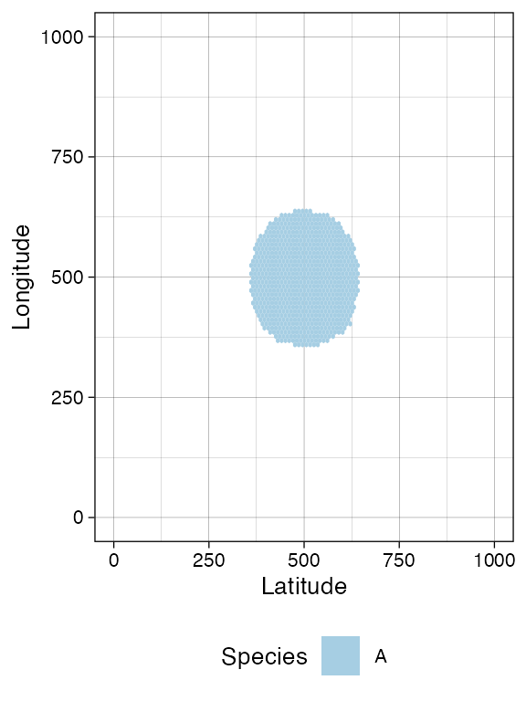
A sample is defined by a name and a bounding box, which has a \((x,y)\) coordinate for the bottom left point, and for the top right point.
For this simulation, we define two samples with names
"S_1_2" and "S_1_2".
# We collect a squared box of (bbox_width x bbox_width) cells
bbox_width <- 50
# Box A1
bbox1_p <- c(400, 400)
bbox1_q <- bbox1_p + bbox_width
# Box B1
bbox2_p <- c(500, 500)
bbox2_q <- bbox2_p + bbox_width
# View the boxes
current +
geom_rect(xmin = bbox1_p[1], xmax = bbox1_q[2],
ymin = bbox1_p[1], ymax = bbox1_q[2],
fill = NA, color = "black") +
geom_rect(xmin = bbox2_p[1], xmax = bbox2_q[2],
ymin = bbox2_p[1], ymax = bbox2_q[2],
fill = NA, color = "black")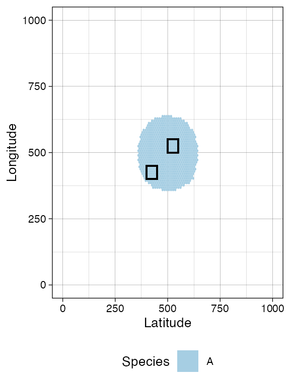
# Sampling
sim$sample_cells("S_1_1", bottom_left = bbox1_p, top_right = bbox1_q)
sim$sample_cells("S_1_2", bottom_left = bbox2_p, top_right = bbox2_q)Note: Sampling removes cells from the tissue, as if the tissue was surgically resected. Therefore, cells that are mapped to the bounding box after application of
Simulation$sample_cells()are no longer part of the simulation.
A new call to plot_tissue() will show the box where the
cells have been removed to be white.
plot_tissue(sim)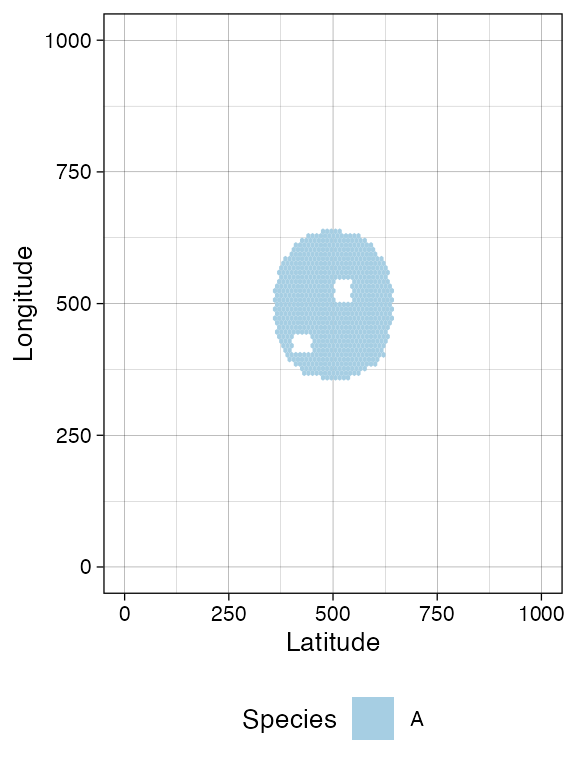
This is also reflected by Simulation$get_cells(), which
now will not find any tumour cell in the sampled region.
# This should be empty
sim$get_cells(c(400, 400), c(400 + bbox_width, 400 + bbox_width)) %>% head
#> [1] cell_id mutant epistate position_x position_y
#> <0 rows> (or 0-length row.names)It should also be remarked that the sampling process exclusively collects tumor cells, while it excludes wild-type cells.
Cell division tree for sampled cells
Every sampled cell is linked, at the evolutionary level, to the other
cells that originate from the same initial cell. It helps to visualise
the evolutionary information on the cells that we have sampled as a
forest of trees (if one seeded multiple initial cells). The forest is an
object of the S4 class SamplesForest.
forest <- sim$get_samples_forest()
forest
#> SamplesForest
#> # of trees: 1
#> # of nodes: 14251
#> # of leaves: 5192
#> samples: {"S_1_1", "S_1_2"}The forest has methods to obtain the nodes of the sampled cells.
forest$get_nodes() %>% head
#> cell_id ancestor mutant epistate sample birth_time
#> 1 0 NA A <NA> 0.00000
#> 2 1 0 A <NA> 18.33874
#> 3 2 0 A <NA> 18.33874
#> 4 3 1 A <NA> 20.91379
#> 5 4 1 A <NA> 20.91379
#> 6 5 2 A <NA> 23.77724The leaves of the forest are sampled cells, while the internal nodes
are their ancestors. The field sample is not available for
internal nodes, and reports the sample name otherwise.
# The leaves in the forest represent sampled cells
forest$get_nodes() %>%
filter(!is.na(.data$sample)) %>%
head
#> cell_id ancestor mutant epistate sample birth_time
#> 1 73228 40296 A S_1_2 124.0419
#> 2 73262 40334 A S_1_1 124.0473
#> 3 73263 40304 A S_1_2 124.0477
#> 4 73273 40319 A S_1_2 124.0488
#> 5 73274 40319 A S_1_2 124.0488
#> 6 73281 40328 A S_1_2 124.0504The roots of the forest having no ancestors.
# If it is one cell, than the forest is a tree
forest$get_nodes() %>%
filter(is.na(.data$ancestor))
#> cell_id ancestor mutant epistate sample birth_time
#> 1 0 NA A <NA> 0We can also query the forest about the samples used to build it.
forest$get_samples_info()
#> name xmin ymin xmax ymax tumoural_cells time
#> 1 S_1_1 400 400 450 450 2592 130.6534
#> 2 S_1_2 500 500 550 550 2600 130.6534We can visualise the forest. This plot reports the cells and, on the y-axis, their time of birth.
plot_forest(forest)
#> Warning: Removed 1 rows containing non-finite values
#> (`stat_edge_link()`).
#> Warning: Removed 1 rows containing missing values (`geom_point()`).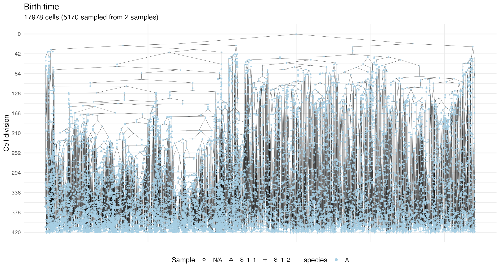
The plot shows also samples annotations and species but, for a large number of cells, it might be complicated to view the full tree, unless a very large canvas is used. For this reaason, it is possible to subset the tree.
# Extract the subforest linked to sample
S_1_1_forest <- forest$get_subforest_for("S_1_1")
plot_forest(S_1_1_forest)
#> Warning: Removed 1 rows containing non-finite values
#> (`stat_edge_link()`).
#> Warning: Removed 1 rows containing missing values (`geom_point()`).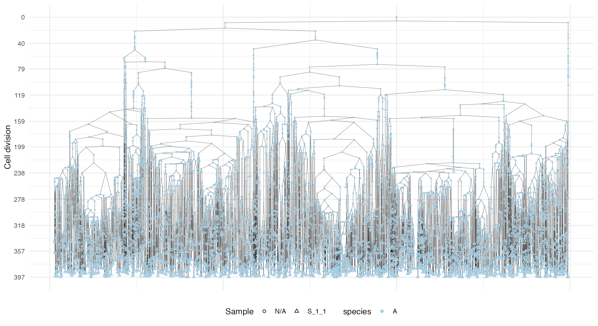
In general, these plots can be annotated with extra information, such as the sampling times, and the MRCAs of each sample in the tree.
# Full plot
plot_forest(forest) %>%
annotate_forest(forest)
#> ✖ The input forest is not a PhylogeneticForest: cannot annotate signature exposures!
#> Warning: Removed 1 rows containing non-finite values
#> (`stat_edge_link()`).
#> Warning: Removed 1 rows containing missing values (`geom_point()`).
# S_1_1 plot
plot_forest(S_1_1_forest) %>%
annotate_forest(S_1_1_forest)
#> ✖ The input forest is not a PhylogeneticForest: cannot annotate signature exposures!
#> Warning: Removed 1 rows containing non-finite values (`stat_edge_link()`).
#> Removed 1 rows containing missing values (`geom_point()`).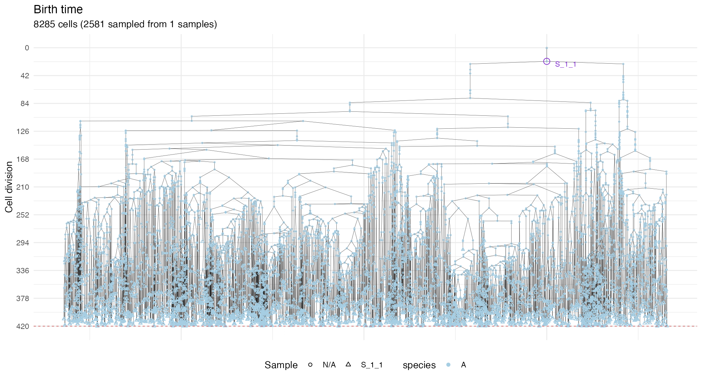
Randomised multi-region samples
sim <- new(Simulation, "Randomised")
sim$add_mutant(name = "A", growth_rates = 0.1, death_rates = 0.01)
sim$place_cell("A", 500, 500)
sim$run_up_to_size("A", 60000)
#>
[████████████████████████████████████████] 100% [00m:00s] Saving snapshotWe include a new mutant and let it grow. This new mutant has much higher growth rates than its ancestor.
# Add a new mutant
sim$add_mutant(name = "B", growth_rates = 1, death_rates = 0.01)
sim$mutate_progeny(sim$choose_cell_in("A"), "B")
sim$run_up_to_size("B", 10000)
#>
[██████████████████████████████████████--] 94% [00m:00s] Cells: 172145
[████████████████████████████████████████] 100% [00m:00s] Saving snapshot
current <- plot_tissue(sim)
current
Since mutant start has been randomised by
Simulation$choose_cell_in(), we have no exact idea of where
to sample to obtain for example, \(100\) of its cells. We can look visually at
the simulation, but this is slow.
rRACES provides a Simulation$search_sample() function to
sample bounding boxes that contain a desired number of cells. The
function takes in input:
- a bounding box size;
- the number \(n\) of cells to sample for a species of interest.
Simulation$search_sample() will attempt a fixed number
of times to sample the box, starting from positions occupied by the
species of interest. If a box that contains at least \(n\) cells is not found within a number of
attempts, then the one with the largest number of samples is
returned.
This allows to program sampling without having a clear idea of the tissue conformation.
# A bounding box 50x50 with at least 100 cells of species B
n_w <- n_h <- 50
ncells <- 0.8*n_w*n_h
# Sampling ncells with random box sampling of boxes of size n_w x n_h
bbox <- sim$search_sample(c("B" = ncells), n_w, n_h)
current +
geom_rect(xmin = bbox$lower_corner[1], xmax = bbox$upper_corner[1],
ymin = bbox$lower_corner[2], ymax = bbox$upper_corner[2],
fill = NA, color = "black")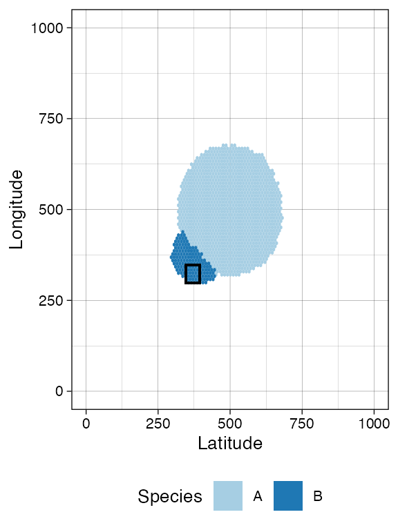
sim$sample_cells("S_2_1", bbox$lower_corner, bbox$upper_corner)Something similar with species A.
bbox <- sim$search_sample(c("A" = ncells), n_w, n_h)
current +
geom_rect(xmin = bbox$lower_corner[1], xmax = bbox$upper_corner[1],
ymin = bbox$lower_corner[2], ymax = bbox$upper_corner[2],
fill = NA, color = "black")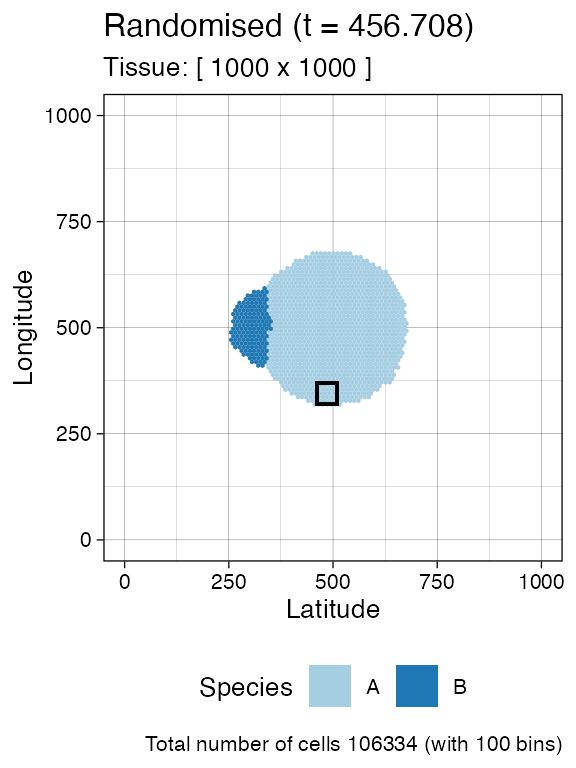
sim$sample_cells("S_2_2", bbox$lower_corner, bbox$upper_corner)The two samples have been extracted.
plot_tissue(sim)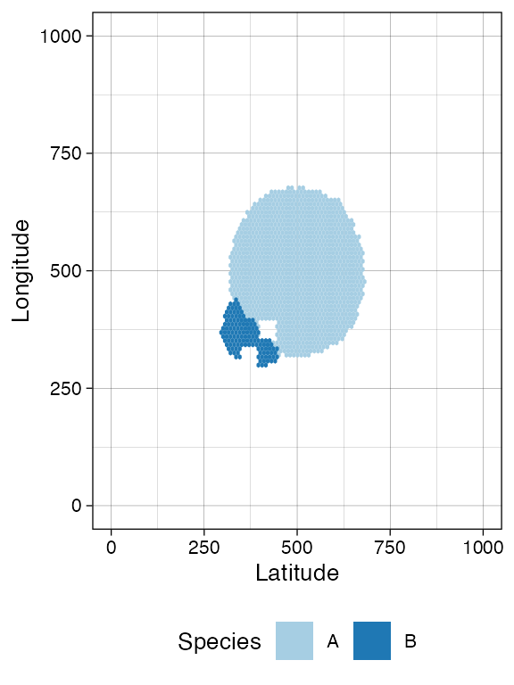
Cell division tree.
forest <- sim$get_samples_forest()
plot_forest(forest) %>%
annotate_forest(forest)
#> ✖ The input forest is not a PhylogeneticForest: cannot annotate signature exposures!
#> Warning: Removed 1 rows containing non-finite values
#> (`stat_edge_link()`).
#> Warning: Removed 1 rows containing missing values (`geom_point()`).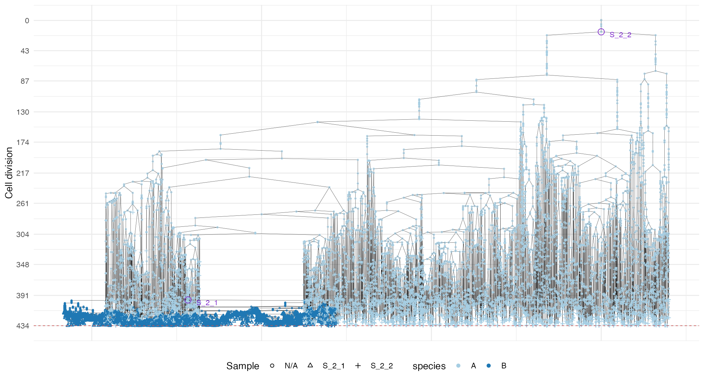
Two populations with epigenetic state
We are now ready to simulate a model with epigenetic switches and subclonal expansions.
sim <- new(Simulation, "Two Populations")
sim$death_activation_level <- 20
# First mutant
sim$add_mutant(name = "A",
epigenetic_rates = c("+-" = 0.01, "-+" = 0.01),
growth_rates = c("+" = 0.1, "-" = 0.08),
death_rates = c("+" = 0.1, "-" = 0.01))
sim$place_cell("A+", 500, 500)
sim$run_up_to_size("A+", 1000)
#>
[████████████████████████████████████████] 100% [00m:00s] Saving snapshot
plot_tissue(sim, num_of_bins = 500)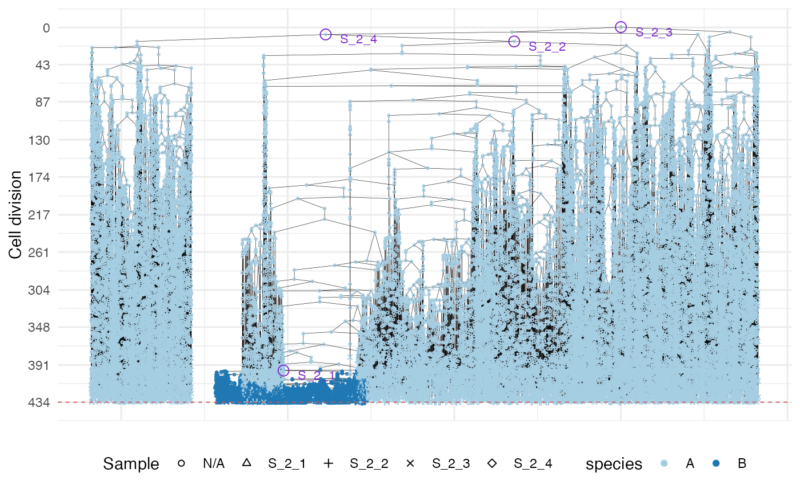
We sample before introducing a new mutant.
bbox_width <- 10
sim$sample_cells("S_1_1",
bottom_left = c(480, 480),
top_right = c(480 + bbox_width, 480 + bbox_width))
sim$sample_cells("S_1_2",
bottom_left = c(500, 500),
top_right = c(500 + bbox_width, 500 + bbox_width))
plot_tissue(sim, num_of_bins = 500)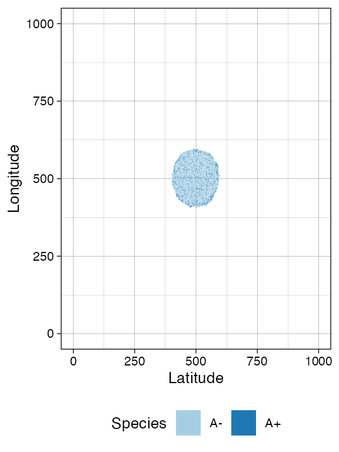
# Let it grow a bit more
sim$run_up_to_time(sim$get_clock() + 15)
#>
[████████████████████████████████████████] 100% [00m:00s] Saving snapshot
plot_tissue(sim, num_of_bins = 500)Add a new submutant.
cell <- sim$choose_cell_in("A")
sim$add_mutant(name = "B",
epigenetic_rates = c("+-" = 0.05, "-+" = 0.1),
growth_rates = c("+" = 0.5, "-" = 0.3),
death_rates = c("+" = 0.05, "-" = 0.05))
sim$mutate_progeny(cell, "B")
# let it grow more time units
sim$run_up_to_time(sim$get_clock() + 25)
#>
[███████████████████████████████████████-] 97% [00m:00s] Cells: 125544
[████████████████████████████████████████] 98% [00m:01s] Cells: 199987
[████████████████████████████████████████] 99% [00m:02s] Cells: 256468
[████████████████████████████████████████] 99% [00m:03s] Cells: 302982
[████████████████████████████████████████] 99% [00m:04s] Cells: 343981
[████████████████████████████████████████] 99% [00m:05s] Cells: 380335
[████████████████████████████████████████] 99% [00m:06s] Cells: 409404
[████████████████████████████████████████] 99% [00m:07s] Cells: 433466
[████████████████████████████████████████] 100% [00m:07s] Saving snapshot
plot_tissue(sim, num_of_bins = 500)
#> Warning:
[1m
[22mRemoved 26 rows containing missing values (`geom_hex()`).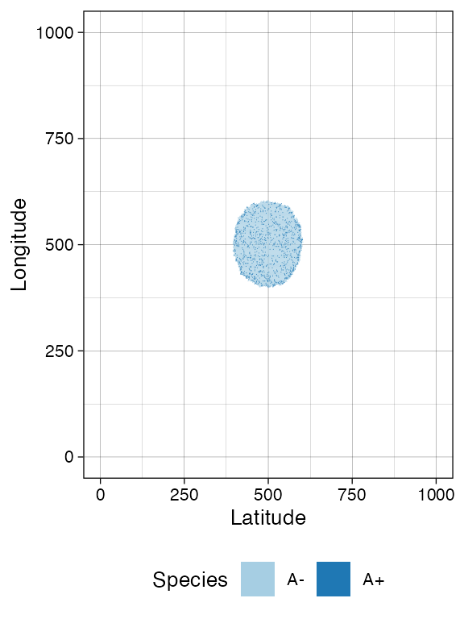
Sample again and plot the tissue
n_w <- n_h <- 50
ncells <- 0.8*n_w*n_h
bbox <- sim$search_sample(c("A" = ncells), n_w, n_h)
sim$sample_cells("S_2_1", bbox$lower_corner, bbox$upper_corner)
bbox <- sim$search_sample(c("B" = ncells), n_w, n_h)
sim$sample_cells("S_2_2", bbox$lower_corner, bbox$upper_corner)
plot_tissue(sim, num_of_bins = 500)
#> Warning: Removed 26 rows containing missing values (`geom_hex()`).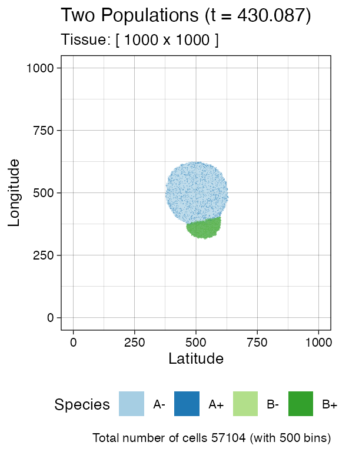
plot_muller(sim)
#> Warning: `filter_()` was deprecated in dplyr 0.7.0.
#> ℹ Please use `filter()` instead.
#> ℹ See vignette('programming') for more help
#> ℹ The deprecated feature was likely used in the ggmuller package.
#> Please report the issue to the authors.
#> This warning is displayed once every 8 hours.
#> Call `lifecycle::last_lifecycle_warnings()` to see where this warning was
#> generated.
#> Warning: `summarise_()` was deprecated in dplyr 0.7.0.
#> ℹ Please use `summarise()` instead.
#> ℹ The deprecated feature was likely used in the ggmuller package.
#> Please report the issue to the authors.
#> This warning is displayed once every 8 hours.
#> Call `lifecycle::last_lifecycle_warnings()` to see where this warning was
#> generated.
#> Warning: `group_by_()` was deprecated in dplyr 0.7.0.
#> ℹ Please use `group_by()` instead.
#> ℹ See vignette('programming') for more help
#> ℹ The deprecated feature was likely used in the ggmuller package.
#> Please report the issue to the authors.
#> This warning is displayed once every 8 hours.
#> Call `lifecycle::last_lifecycle_warnings()` to see where this warning was
#> generated.
#> Warning: `arrange_()` was deprecated in dplyr 0.7.0.
#> ℹ Please use `arrange()` instead.
#> ℹ See vignette('programming') for more help
#> ℹ The deprecated feature was likely used in the ggmuller package.
#> Please report the issue to the authors.
#> This warning is displayed once every 8 hours.
#> Call `lifecycle::last_lifecycle_warnings()` to see where this warning was
#> generated.
#> Warning: `select_()` was deprecated in dplyr 0.7.0.
#> ℹ Please use `select()` instead.
#> ℹ The deprecated feature was likely used in the ggmuller package.
#> Please report the issue to the authors.
#> This warning is displayed once every 8 hours.
#> Call `lifecycle::last_lifecycle_warnings()` to see where this warning was
#> generated.
#> Warning: The `<scale>` argument of `guides()` cannot be `FALSE`. Use "none" instead as
#> of ggplot2 3.3.4.
#> ℹ The deprecated feature was likely used in the ggmuller package.
#> Please report the issue to the authors.
#> This warning is displayed once every 8 hours.
#> Call `lifecycle::last_lifecycle_warnings()` to see where this warning was
#> generated.
#> Scale for fill is already present.
#> Adding another scale for fill, which will replace the existing scale.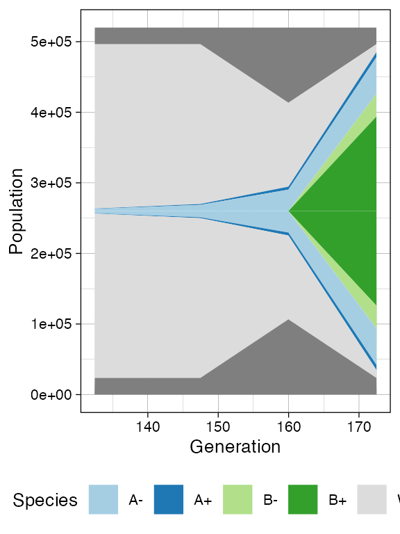
Now we show the cell division tree, which starts being rather complicated
forest <- sim$get_samples_forest()
plot_forest(forest) %>%
annotate_forest(forest)
#> ✖ The input forest is not a PhylogeneticForest: cannot annotate signature exposures!
#> Warning: Removed 1 rows containing non-finite values
#> (`stat_edge_link()`).
#> Warning: Removed 1 rows containing missing values (`geom_point()`).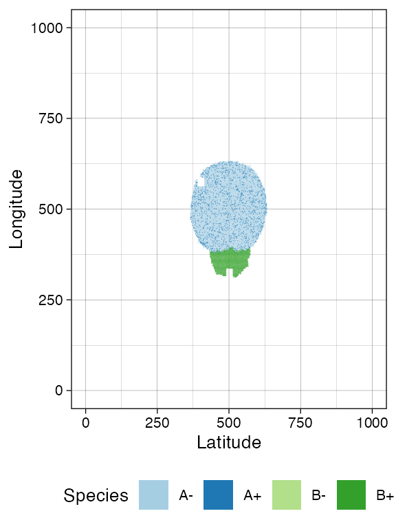
More complex example
Some features allow for a smarter sampling and more advanced visualisation.
We build a tumour with three populations, branching.
sim <- new(Simulation, "Three Populations")
sim$death_activation_level <- 20
sim$update_tissue(250, 250)
sim$add_mutant(name = "A", growth_rates = 0.08, death_rates = 0.01)
sim$place_cell("A", 125, 125)
sim$run_up_to_size("A", 300)
#>
[████████████████████████████████████████] 100% [00m:00s] Saving snapshot
plot_tissue(sim)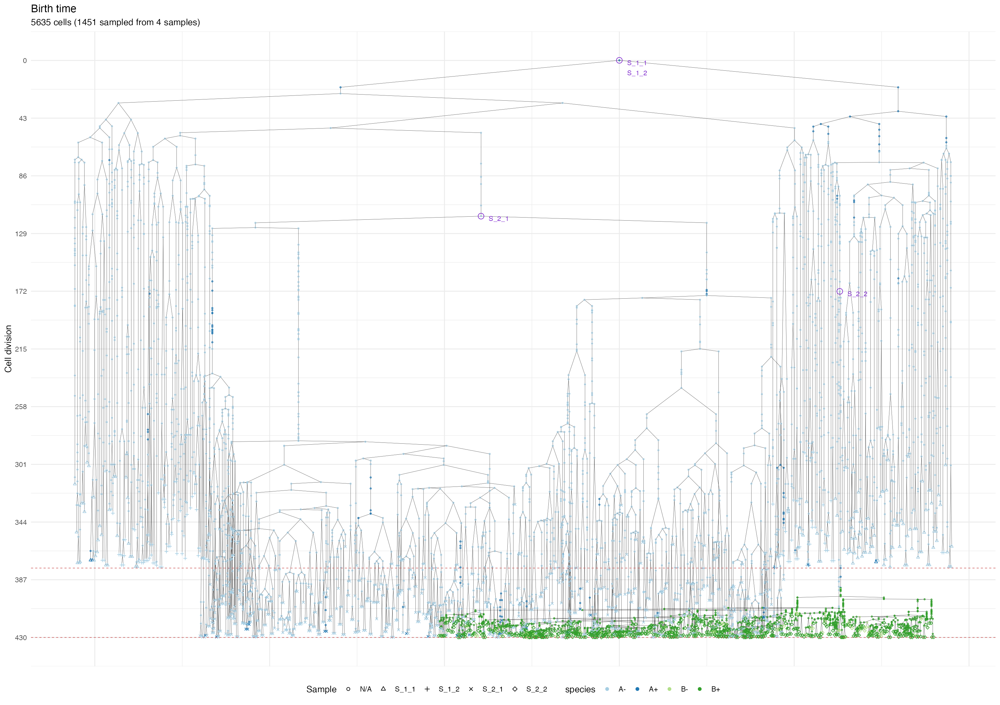
We sample
n_w <- n_h <- 7
ncells <- 0.3*n_w*n_h
# Sampling ncells with random box sampling of boxes of size n_w x n_h
bbox <- sim$search_sample(c("A" = ncells), n_w, n_h)
sim$sample_cells("S_1_1", bbox$lower_corner, bbox$upper_corner)
bbox <- sim$search_sample(c("A" = ncells), n_w, n_h)
sim$sample_cells("S_1_2", bbox$lower_corner, bbox$upper_corner)
plot_tissue(sim)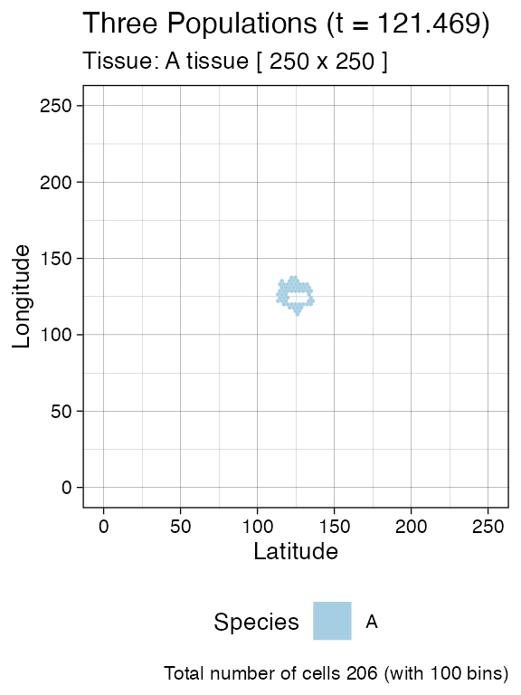
plot_muller(sim)Second mutant starts.
# New submutant
sim$add_mutant(name = "B", growth_rates = 0.13, death_rates = 0.01)
sim$mutate_progeny(sim$choose_cell_in("A"), "B")
sim$run_up_to_size("B", 400)
#>
[████████████████████████████████████████] 100% [00m:00s] Saving snapshot
plot_tissue(sim)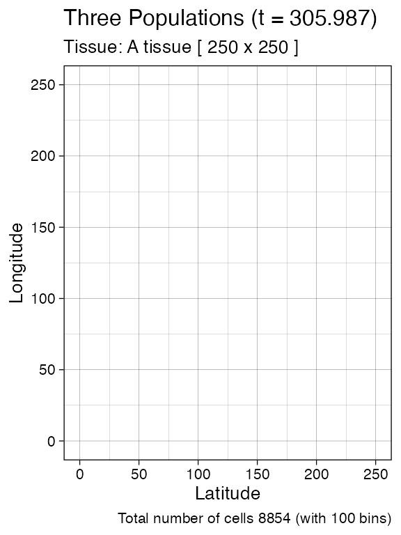
plot_muller(sim)
#> Scale for fill is already present.
#> Adding another scale for fill, which will replace the existing scale.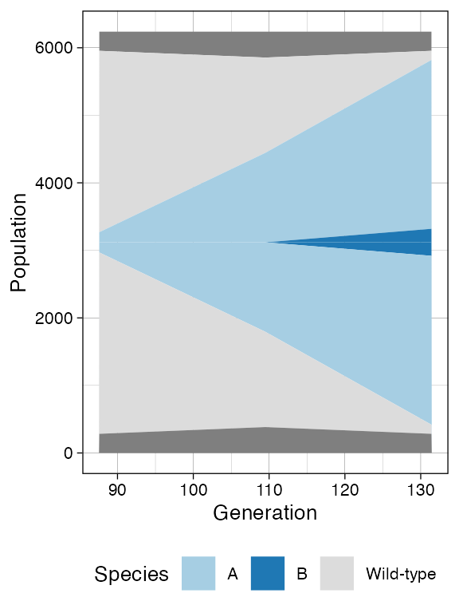
Random sampling of cells from both mutant A and
B.
# Sampling with random box sampling
bbox <- sim$search_sample(c("A" = ncells), n_w, n_h)
sim$sample_cells("S_2_1", bbox$lower_corner, bbox$upper_corner)
bbox <- sim$search_sample(c("B" = ncells), n_w, n_h)
sim$sample_cells("S_2_2", bbox$lower_corner, bbox$upper_corner)
plot_tissue(sim)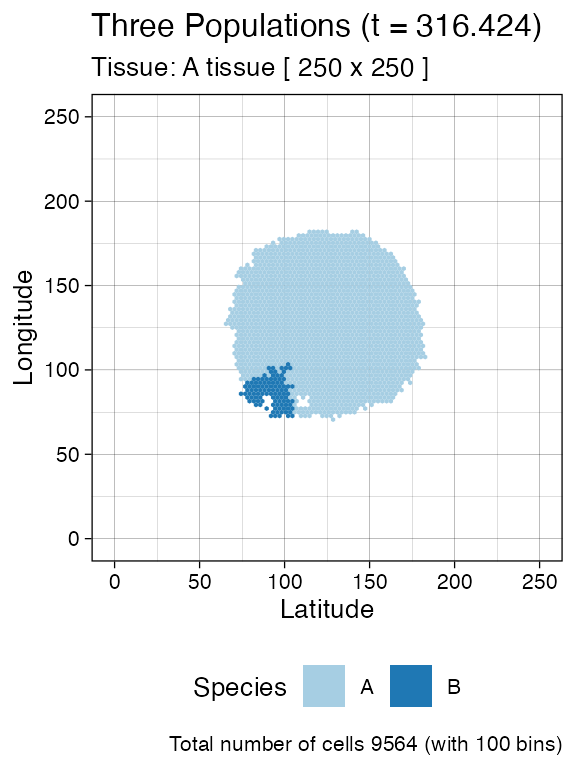
Finally, a third mutant branching from A.
# New submutant
sim$add_mutant(name = "C", growth_rates = 0.6, death_rates = 0.01)
sim$mutate_progeny(sim$choose_cell_in("A"), "C")
sim$run_up_to_size("C", 1000)
#>
[████████████████████████████████████████] 100% [00m:00s] Saving snapshot
plot_tissue(sim)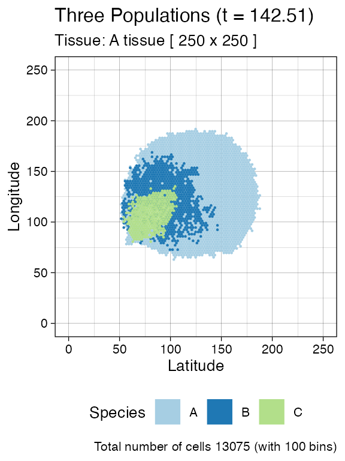
plot_muller(sim)
#> Scale for fill is already present.
#> Adding another scale for fill, which will replace the existing scale.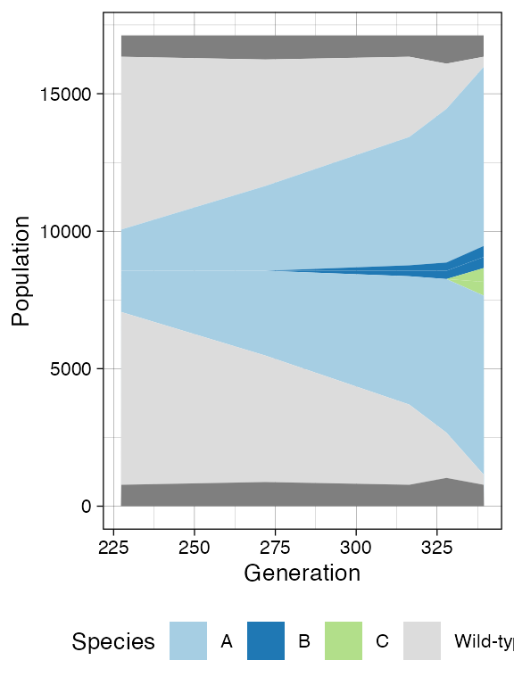
With sampling of mutants B and C.
# Sampling with random box sampling
bbox <- sim$search_sample(c("B" = ncells), n_w, n_h)
sim$sample_cells("S_3_1", bbox$lower_corner, bbox$upper_corner)
bbox <- sim$search_sample(c("C" = ncells), n_w, n_h)
sim$sample_cells("S_3_2", bbox$lower_corner, bbox$upper_corner)
plot_tissue(sim, num_of_bins = 100)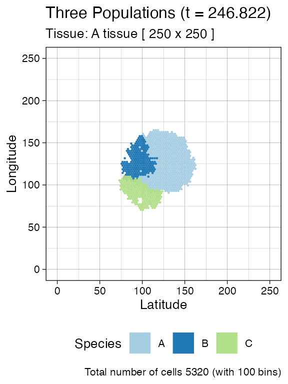
plot_muller(sim)
#> Scale for fill is already present.
#> Adding another scale for fill, which will replace the existing scale.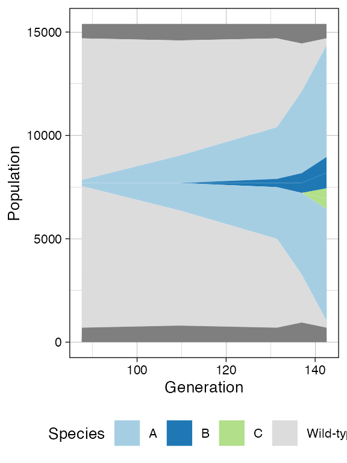
Finally, the tree plot where we annotate samples and MRCAs of each sample.
# Tree data
forest <- sim$get_samples_forest()
plot_forest(forest) %>%
annotate_forest(forest)
#> ✖ The input forest is not a PhylogeneticForest: cannot annotate signature exposures!
#> Warning: Removed 1 rows containing non-finite values
#> (`stat_edge_link()`).
#> Warning: The shape palette can deal with a maximum of 6 discrete values because more
#> than 6 becomes difficult to discriminate
#> ℹ you have requested 7 values. Consider specifying shapes manually if you need
#> that many have them.
#> Warning: Removed 43 rows containing missing values (`geom_point()`).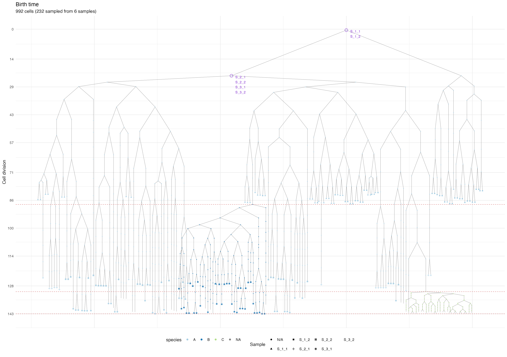